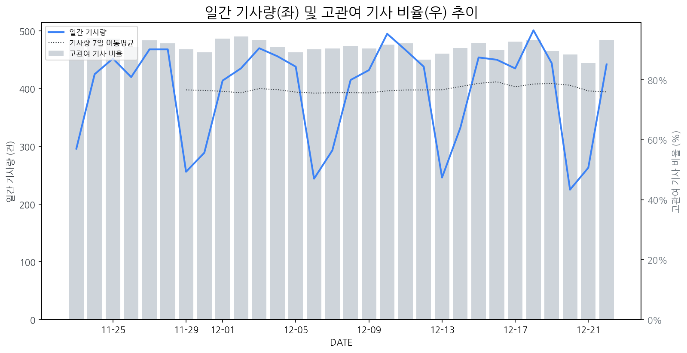

1
시장 활동 지표
기사량 추세 & 이상 징후 탐지
시장의 '전체 기사량'이 평소보다 비정상적으로 급증했는지(Spike)를 차트로 확인하고, LLM이 분석한 급등의 핵심 원인을 파악할 수 있음

고관여 기사란? 산업 연관 키워드로 수집된 기사들 중 디스플레이 키워드에 가중치를 반영하여 도출된 관련성 높은 기사
수집된 기사 수 (2025-12-22)
442
-3% WoW
기사량 변동 수준 (7일 이동평균 대비)
±6.7% 이하
2
오늘의 키워드
급격한 관심 ↑, 주목해야 할 키워드
1
애플
+2.7σ
애플의 차세대 맥북 프로 및 아이맥 OLED 패널 적용 소식이 급증의 핵심 원인입니다.
Related Metrics
금일 언급량: 17, 전일 대비: +13
Interpretation
OLED 수요 증가 기대
Next Step
핵심 토픽 'Foldable_Display_Topic' 관련 신호입니다. 3번 섹션(키워드 감성분석)에서 해당 토픽의 감성 변동을 교차 확인하세요.
2
폴더블
+2.1σ
애플의 폴더블 아이폰 개발 소식과 함께 관련 시장의 기대감이 고조되며 검색량이 급증했습니다.
Related Metrics
금일 언급량: 9, 전일 대비: +8
Interpretation
폴더블 시장 확대 신호
Next Step
'폴더블' 관련 상세 기사 및 경쟁사 반응 모니터링
3
모바일
+2.0σ
CJ온스타일의 모바일 라이브 방송 순접속자 8천만명 돌파 소식이 모바일 관련 산업에 대한 긍정적 관심을 증폭시켰습니다.
Related Metrics
금일 언급량: 7, 전일 대비: +7
Interpretation
모바일 수요 증가 시사
Next Step
'모바일' 관련 상세 기사 및 경쟁사 반응 모니터링
4
삼성전자
+1.9σ
메모리 반도체 사업부 성과급 대폭 상향으로 실적 부활 및 업황 개선 기대감이 급증했습니다.
Related Metrics
금일 언급량: 22, 전일 대비: +19
Interpretation
반도체 강세, OLED 호재?
Next Step
핵심 토픽 'Foldable_Display_Topic' 관련 신호입니다. 3번 섹션(키워드 감성분석)에서 해당 토픽의 감성 변동을 교차 확인하세요.
3
실시간 Risk 키워드
경계해야 할 시그널 탐지
특정 토픽의 부정 감성 점수가 급등할 때 이를 즉시 탐지하고, "근거 기사" 링크를 통해 리스크의 실체를 빠르게 파악할 수 있음
키워드 분석 결과, 오늘은 걱정할 만한 하락 신호가 없습니다. (부정 언급량 변화: +1.5σ 이내)
4
주요 이벤트 모니터링
실시간 산업 동향 파악을 위한 주요 활동
최근 발생한 주요 기업들의 신제품 출시, 투자 등 주요 이벤트를 제공하여 매일 경쟁사 동향을 확인할 수 있음
한미반도체, 하나마이크론 등 시스템 반도체 관련주들이 주가 상승세를 보이며 시장의 주목을 받고 있습니다. 이는 시스템 반도체 산업의 성장 기대감과 투자 심리 개선을 반영하는 것으로 풀이됩니다.
Impact
시스템 반도체 산업의 성장은 디스플레이 산업의 핵심 부품인 반도체 수요 증가로 이어져, 관련 디스플레이 제조 기업들의 부품 조달 및 기술 협력에 긍정적인 영향을 미칠 수 있습니다.
Next Step
디스플레이 제조 기업은 시스템 반도체 시장 동향을 면밀히 모니터링하고, 핵심 반도체 공급망 안정화 및 기술 협력 방안을 적극적으로 모색해야 합니다.
LG 전장 사업이 구광모 회장의 선구안에 힘입어 미래 모빌리티 분야에서 주목받으며 선도적인 위치를 구축하고 있습니다. 이는 LG 그룹의 미래 성장 동력으로서 전장 사업의 중요성을 부각시키는 결과로 이어집니다.
Impact
LG의 전장 사업 강화는 차량용 디스플레이 시장의 기술 혁신과 시장 경쟁을 심화시키며, 차세대 디스플레이 기술 개발을 촉진할 것으로 예상됩니다.
Next Step
디스플레이 제조 기업은 LG와 같은 주요 전장 사업자의 요구사항에 맞춰 차량용 디스플레이의 고성능, 고기능화 및 차별화된 기술 개발에 집중해야 합니다.
2025년 업종 결산 결과, 가전, 모바일, 디스플레이 시장은 기술 혁신과 시장 트렌드 변화에 따라 주요 사업자들이 전략을 재편하고 있음을 시사합니다. 특히 신제품 출시 및 투자 동향은 시장의 성장 가능성과 경쟁 구도에 영향을 미칠 것입니다.
Impact
이는 신규 디스플레이 기술 적용 확대, 프리미엄 시장 경쟁 심화, 그리고 차세대 디바이스 수요 증가로 이어져 디스플레이 시장의 구조적 변화를 가속화할 수 있습니다.
Next Step
신기술 개발 및 차별화된 제품 포트폴리오 강화, 그리고 주요 시장 트렌드에 대한 선제적 대응 전략 수립이 시급합니다.
현대차그룹은 CES 2026에서 AI 로보틱스 생태계 구축 전략을 공개할 예정이다. 이는 미래 모빌리티와 로보틱스 기술 융합을 통해 새로운 시장을 개척하려는 의지를 보여준다.
Impact
현대차그룹의 AI 로보틱스 생태계 강화는 차량 내 디스플레이, HUD(헤드업 디스플레이) 등 차량용 디스플레이 시장의 고도화 및 새로운 인터페이스 기술 수요 증가로 이어질 수 있다.
Next Step
차량용 디스플레이 제조 기업은 현대차그룹의 로보틱스 전략과 연계된 차세대 디스플레이 기술, 사용자 경험(UX) 최적화 방안을 선제적으로 연구 및 제안해야 한다.
애플이 폴더블 아이폰 개발에 착수했다는 소식이 전해졌습니다. 한편, 리플 사장은 XRP를 투자 자산으로 보기 어렵다는 발언을 했습니다.
Impact
애플의 폴더블 아이폰 개발은 폴더블 디스플레이 시장의 성장을 가속화하고 관련 기술 및 소재 시장에 새로운 기회를 제공할 수 있습니다.
Next Step
폴더블 디스플레이 관련 핵심 소재 및 부품 기술 개발에 집중하고, 애플과의 협력 가능성을 타진해야 합니다.
5
지금 주목해야 할 뉴스 TOP 3
[2025 업종 결산] ②가전·모바일·디스플레이
로컬 요약 모델 실행 중 오류 발생: 제목을 클릭하여 기사 전문을 확인할 수 있습니다.
[2025 하반기 Best Goods] 퀄컴, AI 구현 AP '스냅드래곤8 엘리트 5세대'
지난 9월 공개된 스냅드래곤8 엘리트 5세대는 퀄컴이 자체 개발한 중앙처리장치(CPU) '오라이온'과 그래픽처리장치(GPU) '아드레노', 신경망처리장치(NPU) '헥사곤'이 탑재됐다.
시스템반도체 관련주, '어깨춤 으쓱으쓱' 한미반도체·하나마이크론·고...
로컬 요약 모델 실행 중 오류 발생: 제목을 클릭하여 기사 전문을 확인할 수 있습니다.